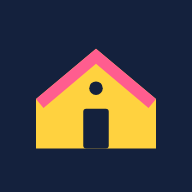
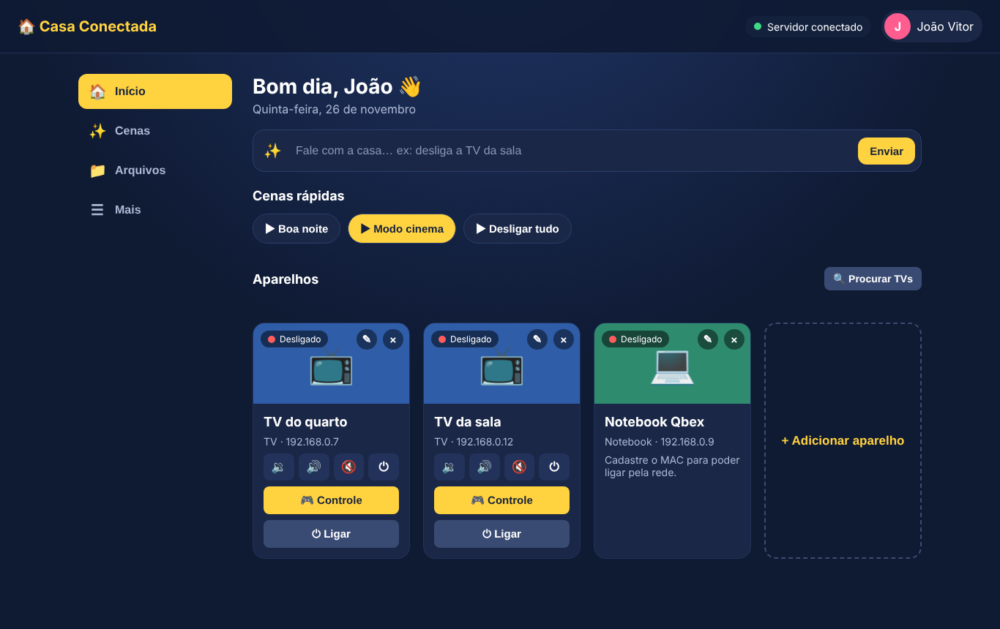
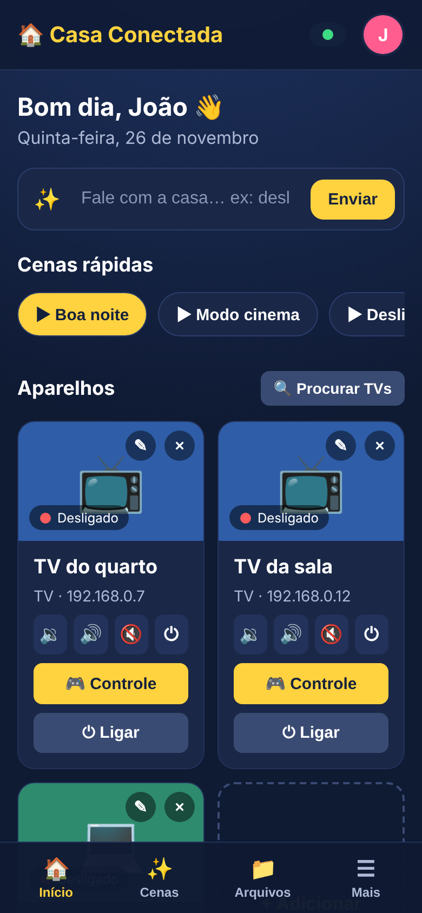
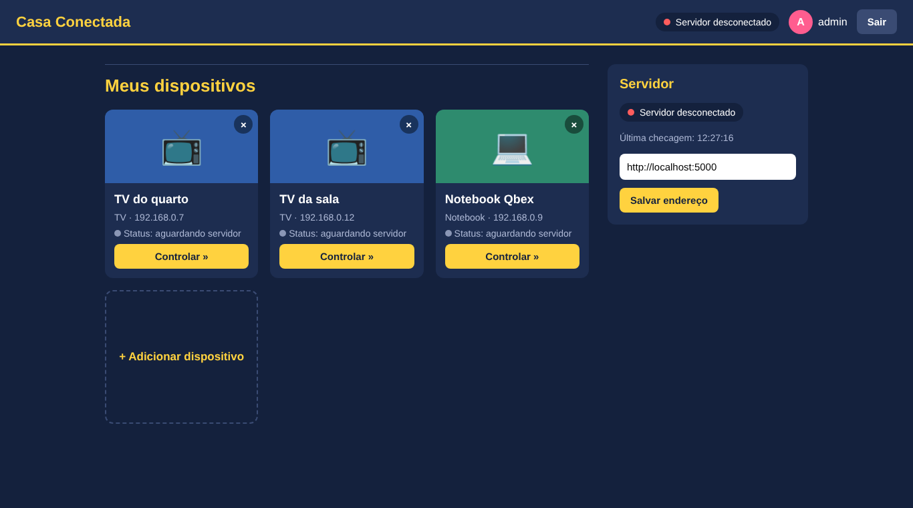

Casa Conectada Ver no GitHubUm site que roda no computador de casa e controla as TVs e aparelhos pela rede, de qualquer celular ou notebook do Wi-Fi. Sem app pra instalar e sem mensalidade.

Começou como um controle remoto. Virou a central da casa.
Controle remoto completo pela rede, abrir apps, digitar, mostrar mensagens e ligar a TV desligada.
Procura na rede, reconhece cada TV pelo número de série e corrige o IP de quem mudou.
"Boa noite", "Modo cinema": vários passos num toque, ou sozinhos na hora marcada.
Administrador e usuário comum, foto de perfil, cadastro com aprovação e senha recuperada por e-mail.
Roda em mais de um computador, até num notebook com Windows 7. Eles se atualizam e sincronizam sozinhos.
Conta pra aprovar, servidor que caiu, atualização instalada, tentativa estranha de login.
Uma pasta compartilhada pra enviar e baixar arquivos de qualquer aparelho.
Converse com a casa: "desliga a TV da sala". Pronto no código, esperando a chave da API.

No celular, o menu vira uma barra embaixo, igual a um app, e dá pra adicionar o site à tela de início.
A primeira versão é de 14/11/2026. Esta é de 26/11/2026, doze dias depois.

Python + Flask no servidor, HTML/CSS/JavaScript puros no site, ADB para falar com as TVs.
Celulares e notebooks (navegador)
│ Wi-Fi de casa
▼
PC principal ── servidor.py (Flask) ──► TVs Android (ADB pela rede, porta 5555)
▲ sincronização cifrada + atualizações assinadas
▼
Notebook antigo (Windows 7) ── mesmo servidor, recebe as versões novas sozinho